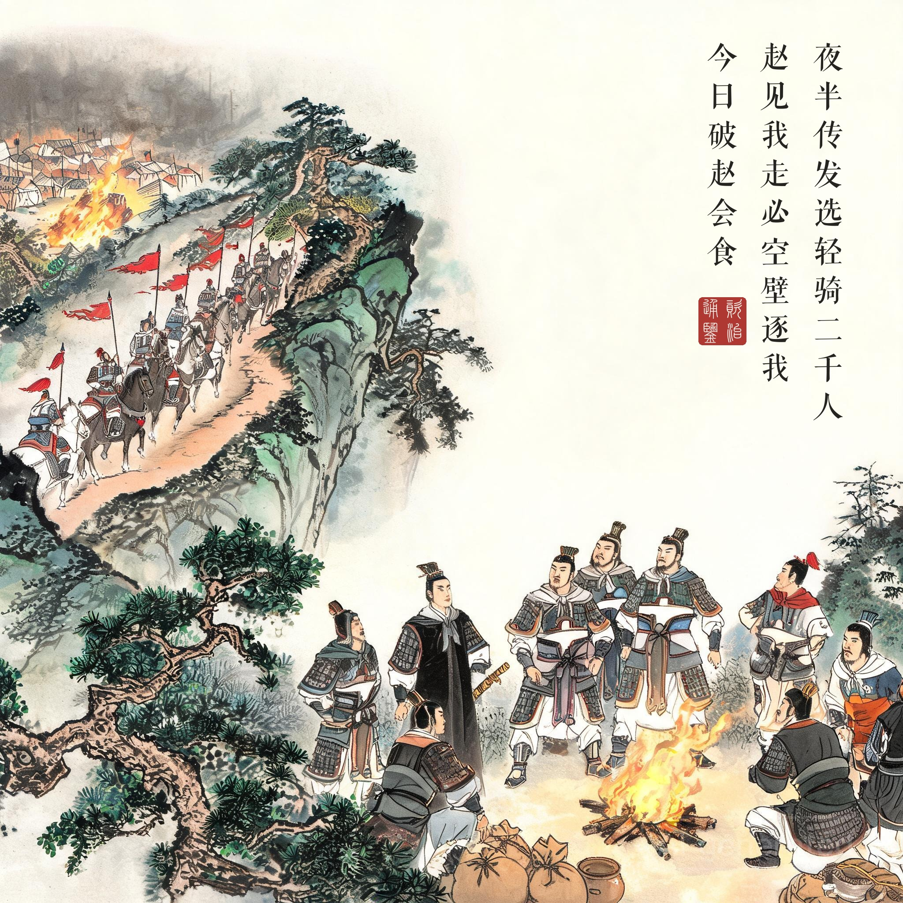
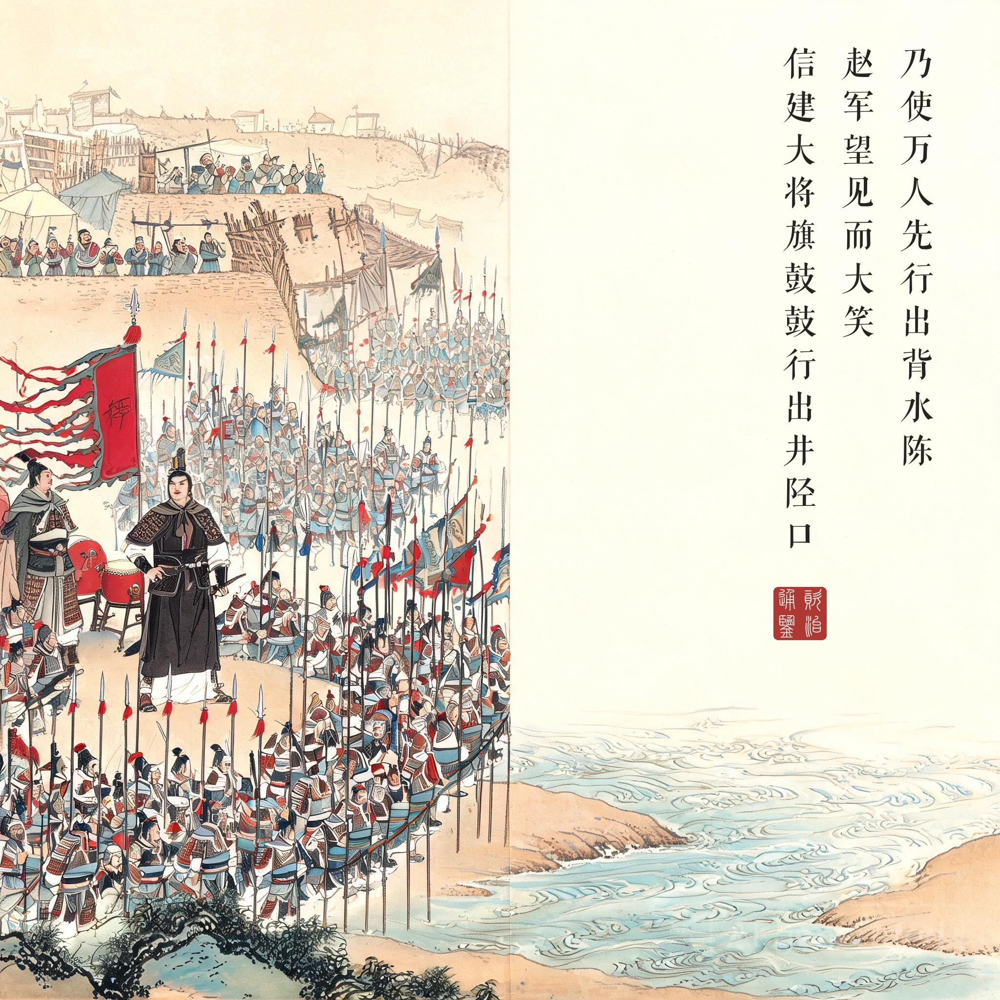
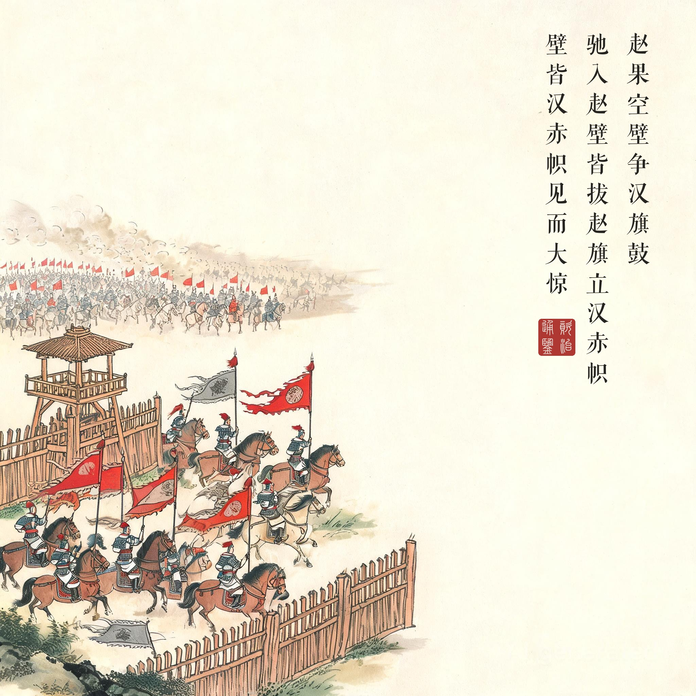
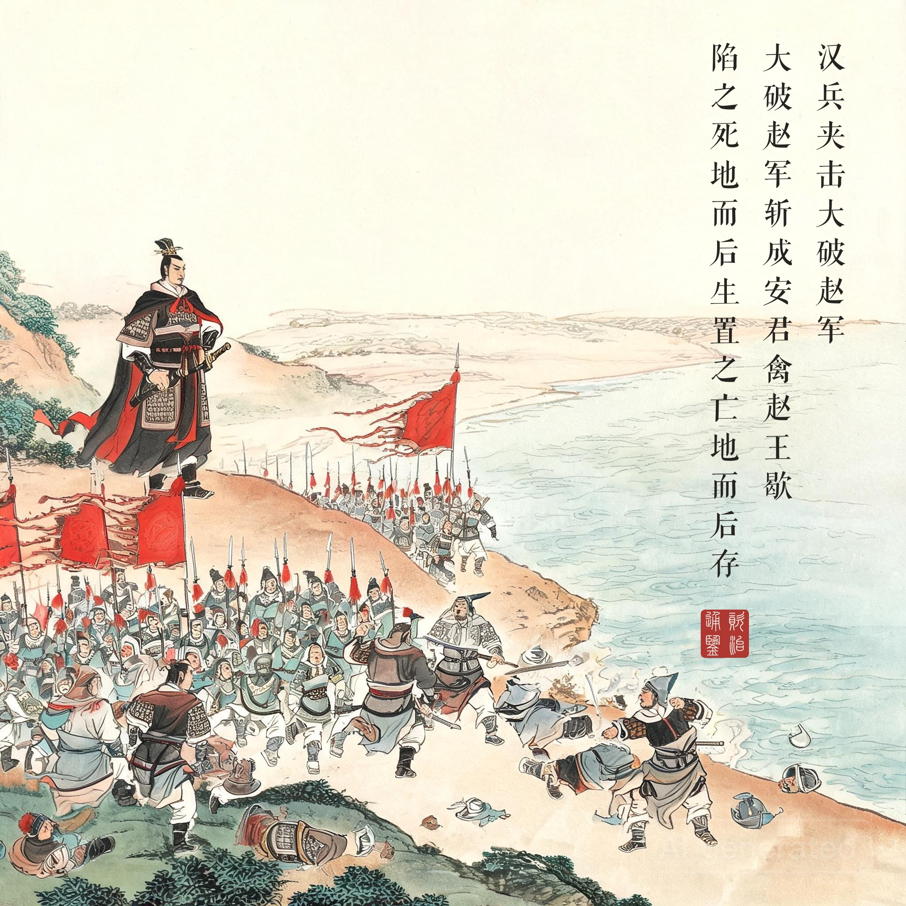

《资治通鉴 · 卷第十 · 汉纪二》太祖高皇帝上之下三年（公元前 204 年）
（据 daizhigev20《资治通鉴》底本节录）
冬，十月，韩信、张耳以兵数万东击赵。赵王及成安君陈馀闻之，聚兵井陉口，号二十万。广武君李左车说成安君曰："韩信、张耳乘胜而去国远斗，其锋不可当……今井陉之道，车不得方轨，骑不得成列……愿足下假臣奇兵三万人，从间路绝其辎重；足下深沟高垒勿与战……不至十日，而两将之头可致于麾下。"成安君尝自称义兵，不用诈谋奇计，曰："韩信兵少而疲，如此避而不击，则诸侯谓吾怯而轻来伐我矣。"
韩信使人间视，知其不用广武君策，则大喜，乃敢引兵遂下。未至井陉口三十里，止舍。夜半，传发，选轻骑二千人，人持一赤帜，从间道萆山而望赵军。诫曰："赵见我走，必空壁逐我；若疾入赵壁，拔赵帜，立汉赤帜。"令其裨将传餐，曰："今日破赵会食！"诸将皆莫信，佯应曰："诺。"……乃使万人先行，出，背水陈。赵军望见而大笑。
平旦，信建大将旗鼓，鼓行出井陉口；赵开壁击之，大战良久。于是信与张耳佯弃鼓旗，走水上军；水上军开入之，复疾战。赵果空壁争汉旗、鼓，逐信、耳。信、耳已入水上军，军皆殊死战，不可败。信所出奇兵二千骑共候赵空壁逐利，则驰入赵壁，皆拔赵旗，立汉赤帜二千。赵军已不能得信等，欲还归壁；壁皆汉赤帜，见而大惊，以为汉皆已得赵王将矣，兵遂乱，遁走，赵将虽斩之，不能禁也。于是汉兵夹击，大破赵军，斩成安君泜水上，禽赵王歇。诸将效首虏，毕贺，因问信曰："兵法：'右倍山陵，前左水泽。'今者将军令臣等反背水陈，曰'破赵会食'，臣等不服，然竟以胜，此何术也？"信曰："此在兵法，顾诸君不察耳！兵法不曰'陷之死地而后生，置之亡地而后存'？且信非得素拊循士大夫也，此所谓'驱市人而战之'，其势非置之死地，使人人自为战。今予之生地，皆走，宁尚可得而用之乎？！"诸将皆服，曰："善！非臣所及也。"
汉三年冬十月，韩信、张耳率数万兵东进攻赵。赵王和成安君陈馀闻讯，在井陉口聚兵，号称二十万。广武君李左车献策："韩信、张耳乘胜远离本国作战，锋不可当……井陉道窄，车不能并行、骑不能成列……请拨给我奇兵三万，从小路截断他们的辎重；您深沟高垒坚守不战……不出十日，韩信张耳两颗人头就能送到您帐下。"成安君素来自诩义兵、不用诈谋奇计："韩信兵少又疲惫，这样都躲避不出战，诸侯会说我胆怯，轻易来伐。"
韩信派人 spy 过，得知陈馀不用李左车之策，大喜，才敢进兵。离井陉口三十里扎营。半夜传令：选轻骑两千人，每人持一面红旗，抄小路隐蔽山中望赵军，约定："赵军见我退走，必倾巢追击——你们急速冲入赵营，拔掉赵旗，插上汉军红旗。"又命副将分发早饭："今天灭了赵国再开席！"众将谁也不信，含糊应"诺"。随后派一万人先出发，出井陉口，背靠河水列阵。赵军望见，放声大笑。
天一亮，韩信竖起大将旗鼓，擂鼓出井陉口；赵军开垒出击，大战良久。韩信与张耳假装抛旗弃鼓，退入背水军阵；水上军放他们进来，转身再战。赵军果然倾巢出动，争抢汉军旗鼓，追击韩信张耳。二人既入背水阵，全军殊死作战，赵军无法击破。那两千轻骑等赵营一空，飞驰而入，尽数拔赵旗、立起两千面汉军红旗。赵军一时抓不到韩信等人，想回营——只见满营尽是汉军红旗，大惊失色，以为赵王将领都已全军被俘，阵脚大乱四散奔逃，赵将连斩逃兵也禁不住。汉军两面夹击，大破赵军，斩成安君于泜水之上，生擒赵王歇。诸将献捷道贺，问："兵法讲'右背山陵，前左水泽'，将军反而让我们背水列阵，还说'灭了赵国开席'，我们不服——竟然真胜了，这是什么打法？"韩信说："这就在兵法里，只是诸位没细察——兵法不是说了'陷之死地而后生，置之亡地而后存'？何况我这支军队没有时间训练，等于赶着集市上的老百姓去打仗：不把他们放在死地，人人各自为战，给了生路就都跑了，还怎么用？"诸将皆服："妙！我们想不到。"
先赢在间谍战。此战第一个胜负手在开打之前："韩信使人间视，知其不用广武君策，则大喜，乃敢引兵遂下。"陈馀拒用李左车三万奇兵之计，是二十万人送命的起点；而韩信是听完敌营的高层会议纪要才敢进兵的。历史上以少胜多的名局，开局几乎都赢在信息——而"自信仁义、不屑诈谋"的一方，总是把信息优势拱手让人。
两个战场，同一秒钟。背水阵不是"勇"，是算术：背水的三万人退无可退，人人自为战，是一处战场；两千轻骑换旗于空营，"壁皆汉赤帜"一声惊呼摧垮二十万人心，是另一处。前者赌的是求生欲，后者赌的是从众心。妙在赵军两次"大笑"——笑背水列阵时，败局已定；这一战证明，兵法的最高境界不是让敌人怕，是让敌人笑。
读画小识。第二幕的背水晨阵与第三幕的易帜奇袭互为表里：画二把"背水"二字画进大地——阵线、河水、对岸嘲笑的赵兵；画三满营旗色变换的一瞬，是全回声音最响的一帧。第四幕题款"陷之死地而后生，置之亡地而后存"为韩信战后自解，是这场战役写进中国成语的落款。